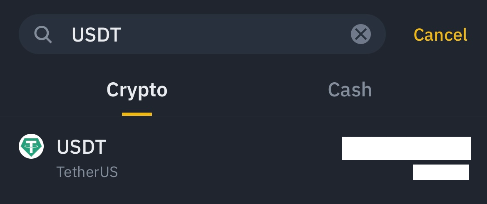
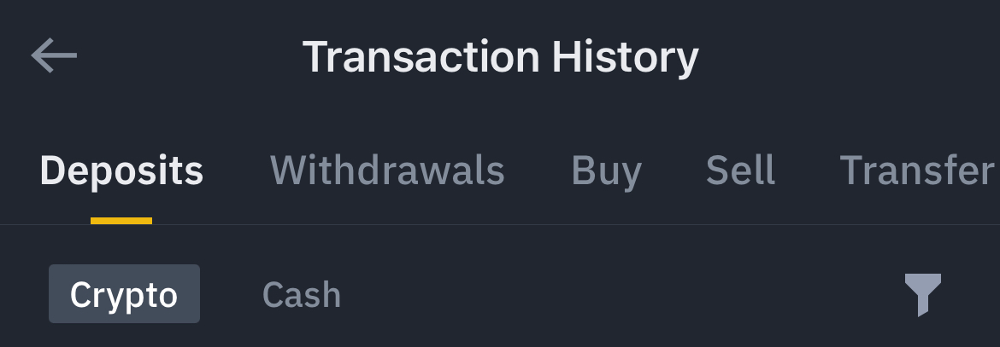
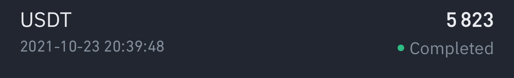

L’exchange n°1 dans le monde.
Binance est une entreprise cotée à plus d’un milliard de dollars. Comme tout exchange, il vous permet d’échanger des cryptomonnaies contre d’autres cryptomonnaies (bitcoin, ethereum, tether…) ou des monnaies fiduciaires comme l’euro ou le dollar.
Accès rapide
Cliquez sur une ligne en dessous pour descendre dans la section choisie
Plus de 15 millions d’utilisateurs
Chaque année, plus de 15 millions d’utilisateurs achètent et échangent près de 2 milliards de dollars en Cryptomonnaie sur Binance.
Une carte bancaire Visa
Avec la carte Visa Binance, vous pouvez convertir et dépenser vos crypto monnaies favorites dans plus de 60 millions de magasins et commerces dans le monde.
Des intérêts en épargnant
Déposez et conservez votre cryptomonnaie. Tout en percevant des intérêts, vous avez la possibilité d’effectuer des retraits ou des transactions à tout moment.
250 cryptomonnaies disponibles. Un volume d’échange journalier de 2 millards de dollars.
Acheter et vendre des cryptos en quelques minutes sur Binance. Rejoignez la plus grande plateforme d’échange de cryptos au monde. Découvrez une partie de l’écosystème Binance et ses cryptos associés.
Disponible sur Mobile (Android et IOS)
Disponible en ligne sur Ordinateur

Comment s’inscrire et ouvrir son compte sur Binance ?
Commencez à vous inscrire en suivant les différentes étapes. Rendez-vous ensuite dans votre messagerie afin de valider l’email que vous a envoyé Binance. Cliquez sur le lien qu’il contient afin de valider votre adresse mail, ce qui vous permettra d’activer votre compte.
Une fois revenu sur Binance, cliquez sur le lien Connexion.
Nous vous recommandons de vous rendre sur l’URL : https://www.binance.com/fr/my/settings/profile . Cette page permettra de commencer la sécurisation de votre compte.
Comment sécuriser son compte et son portefeuille sur Binance (1/3) ?

Nous allons maintenant sécuriser votre compte afin d’éviter tout piratage. Pour cela rendez-vous sur cette URL : https://www.binance.com/fr/my/security
Plusieurs niveaux de sécurité sont recommandés comme l’authentification Google couplé à l’authentification Email.
Authentification Google.
Il s’agit d’une application mobile gratuite permettant de générer un code d’activation toutes les 30 secondes. Nous la recommandons fortement.
Authentification par Email.
Il s’agit d’un email envoyé par Binance composé d’un code à 6 chiffres. Pour chaque transaction, il vous faudra indiquer ce code. En revanche, nous ne recommandons pas l’authentification Google couplé avec le SMS, préférez l’email à la place.
Comment sécuriser son compte avec le KYC de Binance (2/3) ?

Afin de profiter pleinement des services Binance et de lever les restrictions, vous allez devoir valider votre KYC (Know Your Customer). Vous allez pouvoir accepter et retirer des montants plus importants, commander votre CB Visa Binance, accéder au Launchpad et au trading Future.
Pour cela cliquez sur la Vérification d’identité. Il s’agit d’un process en 2 étapes. Vous renseignez les champs nécessaires puis vous transmettrez l’une des pièces jointes demandées (pièce d’identité recto / verso, ou passeport, ou le permis de conduire.)
⚠️ Attention, ils regardent la date d’expiration, la qualité de la photo et l’ensemble des numéros s’ils sont identifiables. S’il y a un refus, ils ne vous disent pas obligatoirement pourquoi, mais on vient de vous les citer.
Sécuriser son compte avec la reconnaissance faciale (3/3) ?

Il s’agit de la dernière étape. À partir de la webcam de l’ordinateur ou du téléphone, vous allez devoir suivre les indications. Enlevez chapeau, lunettes, etc. Votre visage devra etre positionné de face dans le cercle prévu à cet effet. Ils pourront vous demander de cligner des yeux, d’effectuer des rotations avec la tête, de regarder à droite et à gauche…
Vous recevrez une réponse si l’étape a été concluante ou non. Auquel cas, il faudra la refaire jusqu’à ce que cela soit validé.
Comment faire un dépôt sur Binance avec sa carte bancaire ?
Sur l’application, appuyez sur Deposit
Appuyez sur Cash
(1) Écrivez EUR
(2) Cliquez sur EUR
Appuyez sur Continue
Dans Amount, sélectionnez la somme que vous souhaitez déposer puis appuyez sur Confirm
Indiquez vos numéros de carte puis finalisez le paiement
⚠️ La carte doit être à votre nom
Comment échanger ses euros contre de la cryptomonnaie ?
Appuyez sur Convert
Appuyez sur BTC
Écrivez EUR puis cliquez sur le symbole en dessous
Faîte la même opération avec ETH : Écrivez USDT puis cliquez sur le symbole en dessous
Appuyez sur Max, puis cliquez en bas sur Preview Conversion et finalisez l’échange
Comment effectuer un retrait en USDT ERC20
Sur l’application, appuyez sur Wallets (ou Porteufeuille)
Appuyez sur Withdraw (ou Retrait)
Tapez USDT dans la barre de recherche puis cliquez sur le symbole ci-dessous
Écrivez dans Address l’adresse USDT ou vous voulez effectuer votre dépôt
Dans Network choisissez le réseau Ethereum ERC20 (sauf mention contraire)
Dans Amount le montant que vous souhaitez déposer, n’oubliez pas les frais
Sur cette capture nous souhaitons envoyer 1000 USDT à l’adresse suivante : 0xc482b9fddd0065622dd663517474c74cdce44631 que nous avons copier coller dans Address
Le réseau habituel : Ethereum (ERC20)
Nous avons rajouté les frais de réseau (mentionné en bas de l’écran) de 24 USDT pour bien envoyer les 1000 USDT
Quand tout est bon, appuyez sur Withdraw (Retrait) et finaliser votre envoi
Comment effectuer un retrait en USDT TRC20
Sur l’application, appuyez sur Wallets (ou Porteufeuille)
Appuyez sur Withdraw (ou Retrait)
Tapez USDT dans la barre de recherche puis cliquez sur le symbole ci-dessous
Écrivez dans Address l’adresse USDT ou vous souhaitez envoyer les fonds
Dans Network choisissez le réseau Tron (TRC20).
Dans Amount : le montant que vous souhaitez envoyer + 1 $ de frais d’envoi prélevé par Binance.
Sur cette capture nous souhaitons envoyer 1020,3 USDT à l’adresse suivante : THwhPNzUDrpoa7o3PmqnXfGsa8rjYDz2LR que nous avons copier-coller dans Address.
Le réseau : Tron (TRC20).
Nous avons rajouté les frais de réseau (mentionné en bas de l’écran) de 1 USDT pour bien envoyer les 1020,3 USDT.
Quand tout est bon, appuyez sur Withdraw (Retrait) et finaliser votre envoi.
Comment trouver son adresse USDT ERC20 ?
Sur l’application, appuyez sur Wallets (ou Porteufeuille)
Appuyez sur Deposit
Tapez USDT dans la barre de recherche puis cliquez sur le symbole ci-dessous
Cliquez sur Ethereum (ERC20) le réseau principal (hors indications contraires)
Voici votre adresse personnelle, vous pouvez la copier en cliquant sur les deux rectangles à droite de l’adresse
Comment trouver son adresse USDT TRC20 ?
Sur l’application, appuyez sur Wallets (ou Porteufeuille)
Appuyez sur Deposit
Tapez USDT dans la barre de recherche puis cliquez sur le symbole ci-dessous
Cliquez sur Tron (TRC20)
Voici votre adresse personnelle, vous pouvez la copier en cliquant sur les deux rectangles à droite de l’adresse
Comment récuperer son TX ID (Transaction Hash) ?
Sur l’application, appuyez sur Wallets (ou Porteufeuille)
Appuyez sur l’onglet entourner par le cercle rouge
Appuyez sur Withdrawals (ou Retraits)
Cliquez sur votre transaction pour afficher le détail
Voici votre Tx ID (souligné sur la photo) que vous pouvez copier en cliquant sur les rectangles à droite
Vous pouvez également retrouver votre Tx ID (surligné sur la capture) directement dans vos mails de confirmation des retraits par Binance